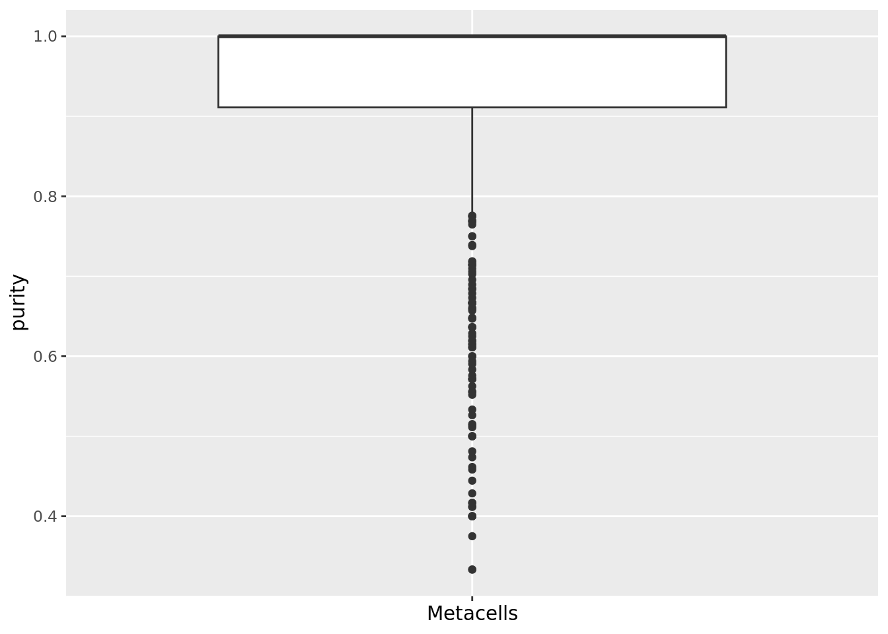
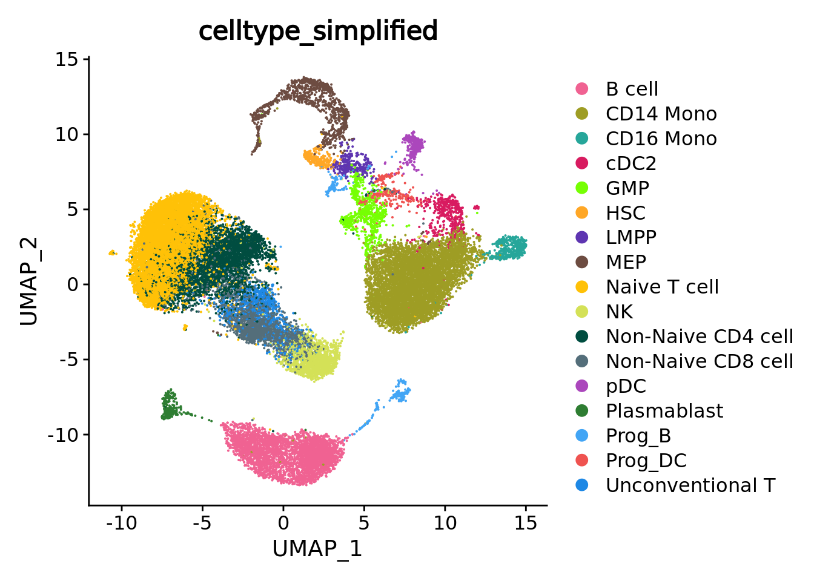
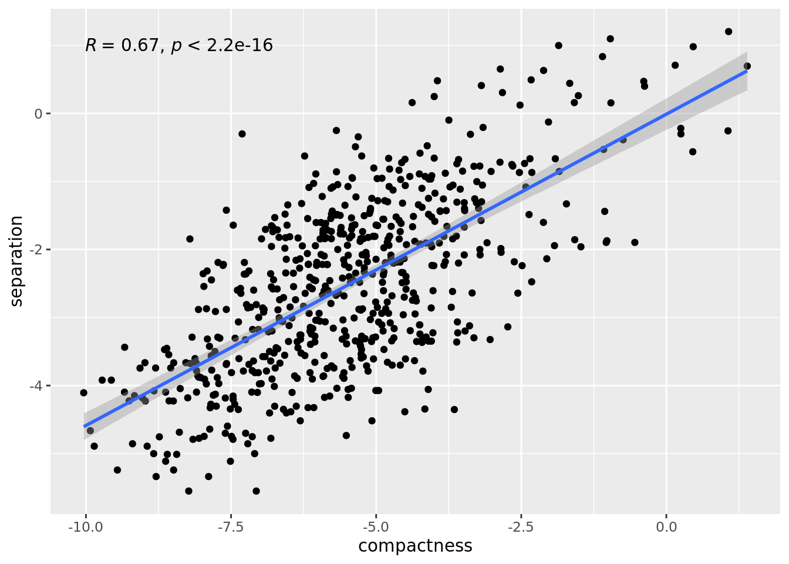
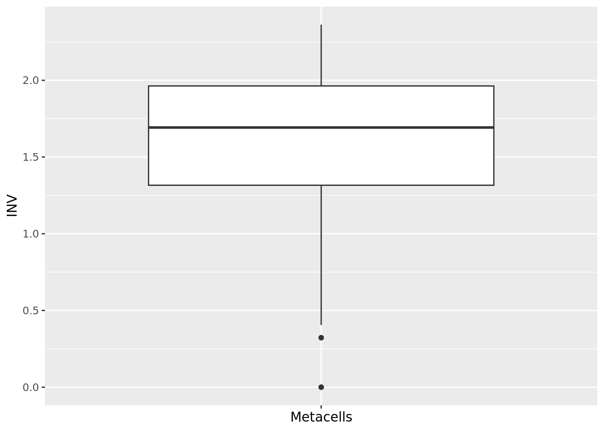

5.1 Quantitative metrics
5.1.1 Purity
When available, cell annotations can be used to annotate each metacell to the most abundant cell category (e.g. cell type) composing the metacell (see chapter 4). This also allows us to compute metacell purity. If the annotation considered is the cell type, the purity of a metacell is the proportion of the most abundant cell type within the metacell (SuperCell?).
mc_data$purity <- mc_purity(membership = mc_data@misc$cell_membership$membership, annotation = sc_data@meta.data[, annotation_label])
#> Loading required package: SeuratObject
qc_boxplot(mc.obj = mc_data, qc.metrics = "purity")
qc_boxplot(mc.obj = mc_data, qc.metrics = "purity", split.by = annotation_label)
5.1.2 Compactness
The compactness of a metacell is the variance of the components within the metacell (SEACells?). The lower the compactness value the better.
This metric as well as the separation metric are computed based on a low embedding of the single-cell data (e.g., PCA). Note that it is important to use the embedding used initially to construc the metacells. In the next chunk, we retrieve the principal components computed for metacell construction (in chapter 4 these principal components were saved in the Seurat objects containing the metacell data) and run UMAP for visualization.
sc_data@reductions[["pca"]] <- mc_data@misc$sc.pca
sc_data <- RunUMAP(sc_data, reduction = "pca", dims = c(1:30), n.neighbors = 15, verbose = F, min.dist = 0.5)
#> Warning: The default method for RunUMAP has changed from calling Python UMAP via reticulate to the R-native UWOT using the cosine metric
#> To use Python UMAP via reticulate, set umap.method to 'umap-learn' and metric to 'correlation'
#> This message will be shown once per session
UMAPPlot(sc_data, group.by = annotation_label, reduction = "umap")
membership_df <- mc_data@misc$cell_membership
mc_data$compactness <- mc_compactness(cell.membership = membership_df, sc.obj = sc_data,
sc.reduction = "pca", n.components = 30, diffusion.components = T)
#> Computing compactness ...
qc_boxplot(mc.obj = mc_data, qc.metrics = "compactness")
qc_boxplot(mc.obj = mc_data, qc.metrics = "compactness", split.by = annotation_label)
5.1.3 Separation
The separation of a metacell is the distance to the closest metacell (SEACells?). The higher the separation value the better.
mc_data$separation <- mc_separation(cell.membership = membership_df, sc.obj = sc_data, sc.reduction = "pca", diffusion.components = T)
#> Computing separation ...
qc_boxplot(mc.obj = mc_data, qc.metrics = "separation")
qc_boxplot(mc.obj = mc_data, qc.metrics = "separation", split.by = annotation_label)
Note that compactness and separation metrics are correlated, better compactness results in worse separation and vice versa. Metacells from dense regions will have better compactness but worse separation, while metacells from sparse regions will have better separation but worse compactness.
library(ggplot2)
ggplot(data.frame(compactness = log(mc_data$compactness), separation = log(mc_data$separation)),
aes(x=compactness, y=separation)) +
geom_point()+
geom_smooth(method=lm) + ggpubr::stat_cor(method = "spearman")
#> `geom_smooth()` using formula = 'y ~ x'
5.1.4 INV
The inner normalized variance (INV) of a metacell is the mean-normalized variance of gene expression within the metacell (MC2?).
The lower the INV value the better.
Note that it is the only metric that is latent-space independent.
mc_data$INV <- mc_INV(cell.membership = membership_df, sc.obj = sc_data, group.label = "membership")
#> Counts and data slots are identical.
#> Normalizing data ...
#> Computing INV ...
qc_boxplot(mc.obj = mc_data, qc.metrics = "INV")
qc_boxplot(mc.obj = mc_data, qc.metrics = "INV", split.by = annotation_label)